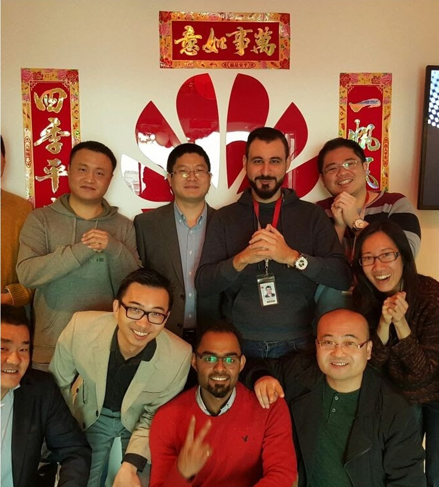
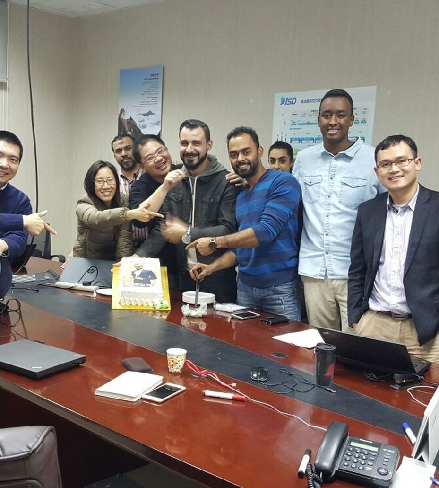

Chapter Nine
Reading Cultures, Not Just Contracts
Kuwait · Bahrain · Dubai · Qatar · Oman · Saudi Arabia
Audio only"Leaders don't just read contracts. They read cultures."

The GCC is not a monolith. This is one of the first things you learn when you work across the Gulf, and one of the things that outsiders consistently get wrong. Kuwait is not Dubai. Bahrain is not Saudi Arabia. Each market has its own cultural DNA — its own relationship to authority, risk, innovation, and trust.
I did not study these differences in a seminar. I lived them. Over two decades of working across six GCC markets, I developed an intuitive understanding of the cultural parameters that determine whether a project succeeds or fails, whether a partnership deepens or dissolves, whether a proposal is welcomed or politely shelved.
The Five Parameters
Cultural Ecosystem Mapping, as I practice it, assesses five parameters: power distance, risk tolerance, innovation outlook, team orientation, and process formality. These are not abstract metrics. They are observable behaviors that determine how decisions are made, how authority is distributed, and how trust is built.
In Kuwait, power distance is significant but moderated by a tradition of consultation. In Saudi Arabia, the hierarchy is more pronounced, but the pace of transformation — particularly under Vision 2030 — means that innovation appetite is higher than many outsiders assume. In Dubai, speed is the culture. In Oman, deliberation is valued. Each requires a different approach, a different tempo, a different set of relationship-building protocols.

The Cost of Cultural Blindness

I have watched well-funded, technically excellent initiatives fail because the leaders behind them treated cultural context as a secondary consideration. They had the right technology, the right business case, the right team — and they lost because they misread the room. They pushed for speed in a culture that valued deliberation. They bypassed relationship-building in a culture where trust precedes transaction.
Organizations that build cultural intelligence into their project methodology — that allocate time and resources for cultural mapping the way they allocate time for technical assessment — consistently outperform those that do not. The gains are not marginal. They are the difference between projects that deliver and projects that stall.

"In the context of loyalty. Losing is winning."
— Zeeshan Sabri